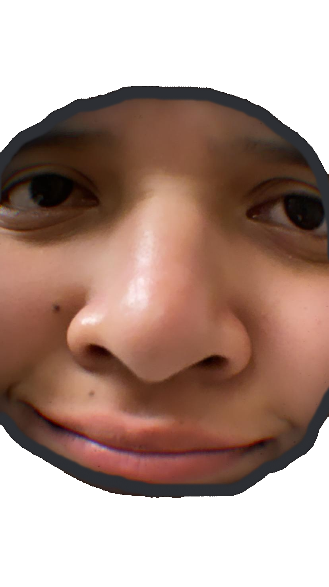
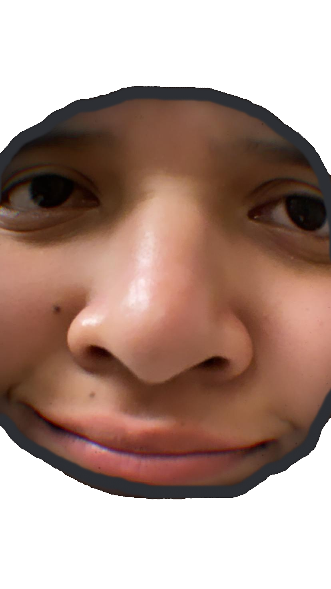
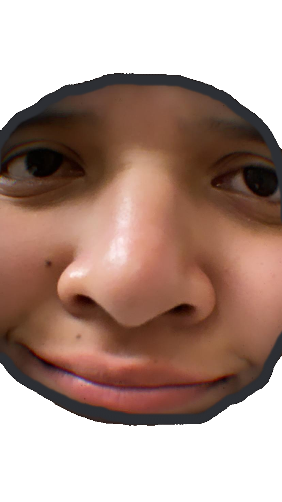
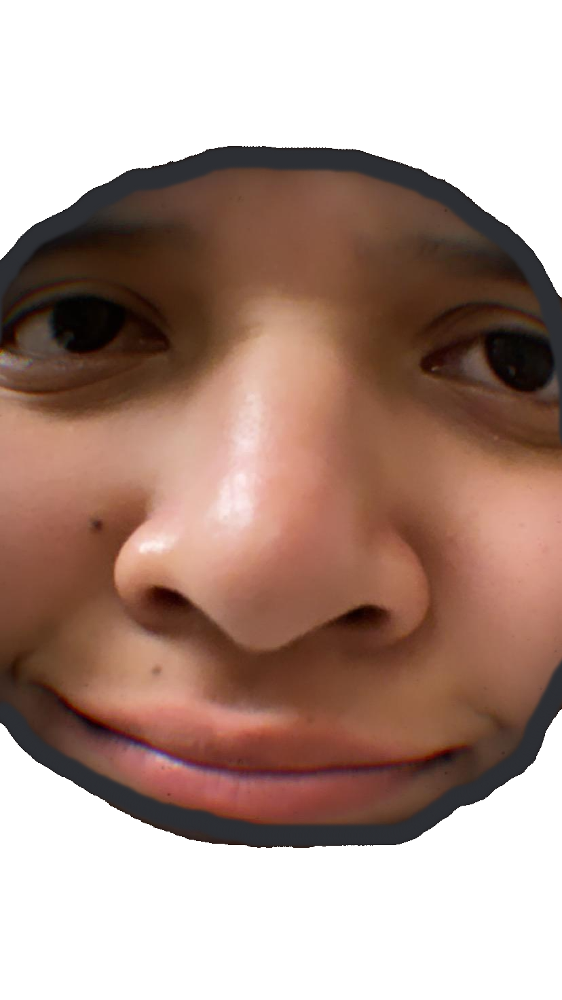

 

¡Pucheme aquí!
Nació un 10 de enero.
Cuando nació fue la menor de un número indeterminado de hermanos (quien dice indeterminado dice que no se sabe el dato, o bien, si se sabe, pero en este momento no lo sé), en algún lugar particular del territorio de El Salvador.
Se podría definir como una persona, perteneciente a una familia, cabe destacar que siguió siendo la menor un tiempo hasta que, casualmente nació alguno de sus hermanos.
Actualmente vive.
Con respecto al número de respiraciones varía a lo largo del día y depende de muchos factores como la actividad física, emociones y salud general.
En promedio una persona respira entre 12 y 16 veces por minuto en reposo. Si tomamos un valor intermedio de 14 respiraciones por minuto, podemos decir que son 840 respiraciones por hora, en un día unas 20160 veces y si extendemos esa cifra hasta el 10 de enero de 2025 la Sermeño puede haber respirado 191,795,520 veces.
Una persona normal parpadea entre 12 y 15 veces por minuto, tomando eso como promedio son 780 parpadeos por hora, en un día son 18720 parpadeos y hasta el 10 de enero del 2025 podrian ser 177,486240 parpadeos.
La frecuencia cardíaca normal para un adulto es de 100 latidos por minuto, si tomamos un valor promedio de 75 latidos por minuto, una persona puede tener aproximadamente 4500 latidos por hora, en un día, 108000 latidos y hasta el 10 de enero de 2025 la Sermeño puede haber tenido alrededor de 1024065000 latidos (en efecto, una cuantía desbordante, bastantes, una cantidad considerable, una proporción basta, una amplitud extraordinaria, una cantidad que es difícil dimensionar, un conjutno vasto y relevante, un vergo).
Aunque sería difícil de estimar, una persona promedio tiene de 1 a 3 evacuaciones cacales al día (sgún de donde estoy sacando la información), si lo dejamos en un promedio de 2 diarias eso equivaldría a 730 evacuaciones el año y entonces podríamos decir que la Sermeño ha tenido 18980 evacuaciones aproximadamente.
Una persona promedio duerme entre 7 y 9 horas por noche, en un año eso hace 2920 horas de sueño por año y a la fecha la Sermeño podría haber dormido unas 76120 horas, o lo que es igual a haberte dedicado 8 años a descansar.
Probablemente se vea así:
La Sermeño habita en La Tierra, para consulta del planeta, mapa de referencia y donde se puede ver la ubicación real del planeta en este día exacto.
Esta es una vista aun más cercana de dicho planeta (dale en el icono del planeta si no queres ver el video).
Esta es una ubicación aún más exacta de la Sermeño (este dato no se recopila de ninguna manera, más que por el dispositivo en donde estás viendo esto)
El tiempo pasa, y entre ello una cantidad enorme de cifras y sucesos desapercibidos que facilitan experimentar el transcurso del tiempo, que aunque irreversible, puede ser aprovechado para disfrutar; espero que disfrutes el tiempo.
Bueno, eso era. Felicidades y que estés bien :), voy a ir agregando cosas de vez en cuando y a lo mejor le cambio el diseño.